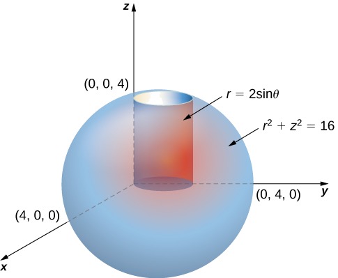

Olá, aqui é o Henrique, tenho 18 anos e sou calouro em Engenharia da Computação. Tenho hiperfocos em matemática, física, química e engenharia. Esta página integra meu projeto do Bootcamp 1, uma disciplina do curso no CEUB.
CIMAN 2011-2024 Educação Basica
CEUB 2025-2028 Engenharia da Computação

Um dos meus focos é integral tripla envolvendo solidos